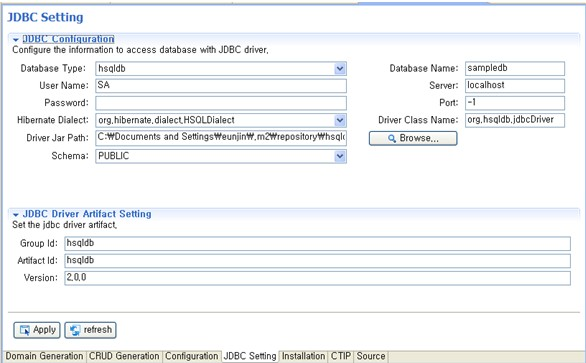

JDBC Setting
Anyframe IDE의 Domain 클래스를 생성 기능을 사용하기 위해서 DB 연결정보를 설정한다.
- 프로젝트를 선택한 후 우 클릭 >> Anyframe Tools >> Anyframe IDE 메뉴를 선택한다.
- Anyframe IDE Editor에서 JDBC Setting Tab을 선택하고 JDBC
연결정보를 입력한다.
- JDBC Configuration
- Database Type: Database 타입으로 hsqldb, oracle, mysql, sybase, db2 를 제공하고 있다.
- Database Name: Database의 이름
- User Name: DB user 이름
- Server: DB가 설치된 서버 ip 정보, 로컬에서 사용하는 경우 localhost
- Password: 패스워드
- Port: hsqldb의 경우 -1, oracle의 경우 1521, mysql의 경우 3306, sybase는 3000, db2의 경우 50000
- Hibernate Dialect: Hibernate에서 쿼리 수행 시, DBMS에 최적화된 기능을
제공하기 위해 사용되는 것이 SQL Dialect 이며, 이 Dialect 프라퍼티를 사용하여 해당 DB 별 Dialect
정보를 설정할 수 있다. 각 DB 별 Dialect 클래스가 따로 존재하여 hsqldb를 선택한 경우, 디폴트로
org.hibernate.dialect.HSQLDialect값이 선택된다.(oracle, mysql, sybase, db2 dialect 도 제공함)
- Driver Class Name: DB의 드라이버 클래스를 설정해 주기 위한 값으로,
hsqldb의 경우 org.hsqldb.jdbcDriver 값으로 설정된다. Database Type 선택 시 해당 DB에 맞는 값이 세팅된다.
- Driver Jar Path: Anyframe IDE 설치 시 샘플 DB를 위한 hsqldb
Driver Jar 파일이 제공되므로 디폴트로 설정된다. 만약 다른 DB를 사용한다면 해당 DB의 Driver jar
파일로 연결시켜준다.
- Schema: 테이블의 집합인 스키마의 이름
- JDBC Driver Artifact Setting : Maven 프로젝트 일 경우에만 활성화 됨
- Group Id: jdbc driver 의 group id
- Artifact Id: jdbc driver 의 artifact id
- Version: jdbc driver의 version

- 입력정보 작성이 끝나면 반드시 Apply 버튼을 클릭하여 JDBC Configuration 정보가 저장되도록
한다.
Schema 정보를 리스트에서 선택하지 않고 Apply 버튼을 클릭할 경우, Schema를 선택하라는 메시지가 출력된다.
Schema 를 제외한 나머지 JDBC Configuration 정보가 정상적인 경우
Schema 정보를 얻어올 수 있으며, 얻어온 리스트에서 Schema 를 선택하여 Apply 하면 Configuration 정보가 반영된다.
Schema 정보를 얻어오기 위해 시도 했으나, DB 연결이 정상적으로 되지 않는 경우에는 실패 원인을 알려주는 메세지가 출력된다.
JDBC 환경 설정 정보가 정상적으로 구성되어 DB와 잘 연결되는지 확인하기 위해서는 Domain Generation
Tab으로 이동하여 Refresh 버튼을 클릭해본다. 이때 정상적으로 연결이 잘 되는 경우라면 해당 DB의 Table들이
조회될 것이다.
[참고 사항]
위에서 설명한 기능 수행 도중에는 프로젝트 생성, 코드 생성 및 DB 변경 등과 같은 Anyframe IDE의 기능을 동시에 수행시킬 수 없으므로 유의하도록 한다.
(Background 실행을 통한 기능 수행 시) |
|